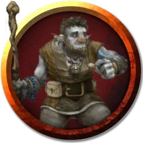

Тумандом
Foghome
Средний Гуманоид (Фирболг), нейтрально-добрый, именной НИП

Класс Доспеха 13 (кольчужная рубаха)
Хиты 27 (5к8 + 5)
Скорость 30 футов
| мод | спас | ||
|---|---|---|---|
| СИЛ | 10 | +0 | +0 |
| ЛОВ | 10 | +0 | +0 |
| ТЕЛ | 12 | +1 | +1 |
| мод | спас | ||
|---|---|---|---|
| ИНТ | 13 | +1 | +1 |
| МДР | 16 | +3 | +3 |
| ХАР | 13 | +1 | +1 |
Навыки Медицина +7, Религия +5, Убеждение +3
Чувства пассивное Восприятие 13
Языки Общий, Великаний, Эльфийский
Опасность 2 (450 опыта)
Бонус мастерства +2
Особенности
Врождённое колдовство. Базовой характеристикой Тумандома является Мудрость (Сл спасброска от заклинания 13). Он может накладывать следующие заклинания, не нуждаясь в материальных компонентах:
• 1/каждое до отдыха: обнаружение магии [detect magic], маскировка [disguise self] (может казаться на 3 фута ниже, чем обычно)
Мощное телосложение. Тумандом считается на один размер больше когда определяется его грузоподъемность и вес, который он может толкать, тянуть и поднимать с земли.
Божественная слава. Тумандом может бонусным действием потратить одну ячейку заклинания, чтобы его рукопашные атаки оружием магическим образом причиняли цели при попадании дополнительный урон излучением 10 (3к6). Это преимущество длится до конца текущего хода. Если священник потратит ячейку 2 уровня или выше, дополнительный урон увеличивается на 1к6 за каждый уровень выше 1.
Использование заклинаний. Священник является заклинателем 5-го уровня. Его базовой характеристикой является Мудрость (Сл спасброска от заклинания 13, +5 к попаданию атаками заклинаниями). У него подготовлены следующие заклинания жреца:
• Заговоры (неограниченно): свет [light], священное пламя [sacred flame], чудотворство [thaumaturgy];
• 1 уровень (4 ячейки): лечение ран [cure wounds], направляющий снаряд [guiding bolt], убежище [sanctuary];
• 2 уровень (3 ячейки): божественное оружие [spiritual weapon], малое восстановление [lesser restoration];
• 3 уровень (2 ячейки): духовные стражи [spirit guardians], рассеивание магии [dispel magic].
Язык зверей и листвы. Тумандом может ограниченно общаться с животными и растениями. Они могут понимать значение его слов, хотя у Тумандома нет никакой специальной способности понять их в ответ. Тумандом совершает с преимуществом проверки Харизмы, чтобы на них повлиять.
Действия
Булава. . Рукопашная атака оружием: +2 к попаданию, досягаемость 5 футов, одна цель. Попадание: 3 (1к6) дробящего урона.